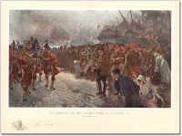
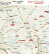

|
JANUARY: early on New Year's morning, the D.A.C. unit
splits into three and marches in the rain and
strong winds to its new camps at West Lavington,
Great Cheverell and Potterne. The men are soaked but
happy to get the horses under cover and to be in
more comfortable camps before nightfall.
The exercises go on; the river Avon is very high and the roads impassable. Charles attends a concert given by
the people of Potterne to entertain the troops. On January 14, still in the rain, the men receive
new equipment with great satisfaction, including
boots they badly needed, some of them being
almost barefoot.
|

Inspection of a battalion
|

Inspection of the horses
|
On January 16, a horse inspection is held at Potterne, at
Eastwell Farm. The horses are
judged to be in good condition. The following Sunday, the troops have divine service in the
local churches. Charles attends a Catholic Mass at Market
Lavington, Devizes. At last fine weather; the roads dry out, and equipment transport and
manoeuvres resume. On January 22, two inches of snow fall. The following days the
weather is fine and cold. Lessons the British learned on
the battlefields are passed on to the
Canadians.
FEBRUARY: the D.A.C. now has its
full complement of wagons and harnesses, but several
items and a few horses are still missing. The major goes in person to
Salisbury to demand them. The rain starts again. On February 4, the Canadian
division is again visited by the King, before whom
it parades.
ON THE WAY
TO THE WESTERN FRONT
Early in the morning of Monday, February 8, the D.A.C. is ordered to go to Lavington station
with all its equipment.  The unit is divided into
eight sections. From late afternoon, at three-hour
intervals, each section marches to the station and takes a
train to Avonmouth, a port on the Severn, near
Bristol, in the west of England. The unit is divided into
eight sections. From late afternoon, at three-hour
intervals, each section marches to the station and takes a
train to Avonmouth, a port on the Severn, near
Bristol, in the west of England.
The weather is fine; the D.A.C.'s "force"
is fourteen officers, four hundred and sixty-one men,
five hundred and ninety-six horses, eighteen mules, four bicycles,
ninety-nine wagons and three motorcycles.
All the trains arrive at Avonmouth on time. But since the
D.A.C. cannot all board a single ship, there is confusion
and loss of materiel, including wagon wheels and nine horses.
 From February 9 to 11, several ships put to sea in the
rain. Charles is in the group that boards on February
11. By way of the Severn they enter the Atlantic, round
the western tip of Brittany and drop anchor at St-Nazaire, a little
north-west of Nantes. From February 9 to 11, several ships put to sea in the
rain. Charles is in the group that boards on February
11. By way of the Severn they enter the Atlantic, round
the western tip of Brittany and drop anchor at St-Nazaire, a little
north-west of Nantes.
(this long detour by sea was to avoid the mines
laid in the Channel by both enemy camps, and the U-boats
and ships of the German fleet patrolling the Channel)
 The equipment is unloaded as
the ships dock. The First Canadian
Division sets foot on French soil: six hundred and ten officers and
more than seventeen thousand men, under the command of Major Currie.
(opposite, a painting by Edgar Bundy, from the Archives of
Ontario).
The
troop camps at St-Nazaire. On February 13, four trains are put at
the D.A.C. unit's disposal. At the end of each, cars are added
and loaded with the equipment, no small task. The first train leaves
early in the evening., the
others follow at three-hour intervals. The
next morning, the first train reaches Angers, where the horses are watered
and fed. At noon the train reaches Le Hutt
Colombier. Hot coffee awaits the men, served by
the kind nurses of the French Red Cross. By
midnight it has passed Rouen. The
horses stand the journey well; there was enough
rope to tie them securely.
On
February 15, the train reaches Abbeville. Hot coffee for
the men and water for the horses. The train leaves again
early in the morning and reaches Boulogne more than two
hours later. There it is stuck
on the track until late afternoon, because there is too much traffic on the
line ahead. Finally, the train arrives late
in the evening at Hazebrouck,
in north-eastern France. After a train journey
of
more than two days, the unloading of the equipment begins.
The soldiers appreciate the kindness of the inhabitants toward them. Two
local interpreters, M. Fabre and Dr. Parrel, have met them at the
station and will guide them to their camp, a farm in the
area. The weather is
fine and mild.
The troop leaves the station after midnight. On the way,
ten wagons overturn crossing a
ditch, which delays everyone. In the middle of the night the unit
hears its first artillery fire coming
from the front. The men finally settle in, at dawn, in
a camp behind the Western Front. It is called #4 brigade area
and is under the command of the British
colonel Penhole. As a member of the British
Empire, Canada was fully integrated into
the British army and subject to its law. On
February 19, a colonel and a commanding officer visit the camp. The
orders are to continue training the men. A
farrier looks after the horses, which are recovering from their
journey by sea and rail. "Ready for action". Artillery fire is heard
east of the camp. A BIRTHDAY UNDER ARREST FOR
CHARLES On February 21, the
men of the D.A.C. receive their pay. That
day Charles takes French leave. His escapade lasts
three days. Does he go alone, or with comrades? Does he come back
on his own, or is he picked up by the military police? He
is put under arrest and tried at Caestre. The offence is "absent
without leave"
. The sentence is "field punishment #2"
for fifteen days, plus a fine of eighteen days' pay, that is $19.80,
debited from his bank account.
ON FEBRUARY 28, 1915, CHARLES TURNS 22.
For this birthday,
far from his family and his country, Charles is under arrest. He
had wanted to have a good time after months of training and before the real war
began for him.
Discipline and punishment
Obedience and order are the backbone of any
military system. The aim of military law, unlike
law in general, is to ensure cohesion and victory
through discipline, not justice.
Regimental courts martial tried minor offences, while general courts
martial were reserved for serious ones. Drunkenness
was the most common breach of
discipline, while desertion, cowardice and abandoning one's
post were more serious offences that could carry the death
penalty..
The most common punishments were imprisonment, fines and demotion. Commanding officers
also imposed field punishment. #1 OR
#2. Punishment # 1,
nicknamed "crucifixion" by the soldiers,
consisted of doing various labours and being tied to a
post or a wheel for two hours a day. The soldiers considered
punishment # 1 particularly degrading.
Punishment # 2 differed only in that
the soldier was not tied to a fixed object.
|
 Here is a drawing by Private Thomas Fisher
showing Field Punishment #1, nicknamed
"crucifixion" by the soldiers. The soldiers were
tied up for two hours a day. Bound fast, they could
neither move nor scratch to relieve common sources of irritation
such as flies and lice. Here is a drawing by Private Thomas Fisher
showing Field Punishment #1, nicknamed
"crucifixion" by the soldiers. The soldiers were
tied up for two hours a day. Bound fast, they could
neither move nor scratch to relieve common sources of irritation
such as flies and lice.
|
|
|
|
MARCH: on the 11th, Charles rejoins his unit,
which has been near
Doulieu since March 2. The D.A.C. is busy carrying ammunition and
equipment between the Caestre supply centre and
the various brigades that have put in requisitions. The artillery fire
from the front can be heard clearly, and at night the sky lights up
under the shelling.
 Cold and snow return over the following
days. On March 20 a German airship drops a bomb in the
morning on the town of Estaires. On Sunday, March 21, the
weather is fine and a Roman Catholic divine service is
offered. The troops are happy and
in perfect health, according to the unit diary. Cold and snow return over the following
days. On March 20 a German airship drops a bomb in the
morning on the town of Estaires. On Sunday, March 21, the
weather is fine and a Roman Catholic divine service is
offered. The troops are happy and
in perfect health, according to the unit diary.
CHARLES
BECOMES A GUNNER On March 24, a reorganization of the First
Canadian Division leads to the transfer of thirteen men from the D.A.C.
to a heavy artillery unit, the 1st Canadian
Heavy Battery. Charles is one of these men; he becomes a gunner (gunner).
Charles joins his new unit near Fromelles. It
has existed for only six weeks.
After supporting the attack on Neuve Chapelle on March 10, the
1st Canadian Heavy Battery concentrates for the rest of the month on various
targets in the area. It is
very cold, and Charles learns his new duties and gets to know his
new brothers-in-arms.
 APRIL: on the 1st,
in mild weather, the unit moves to a new camp farther
north, at Doulieu. It arrives late in the evening. Five
days later it heads farther north still, toward
Steenvoorde. The soldiers are billeted on
two farms in the commune of Terdeghem. The non-commissioned officer
notes in the unit's war diary that a heavy artillery unit
cannot advance as fast as the infantry
brigades!
It often has to give way on the crowded roads. APRIL: on the 1st,
in mild weather, the unit moves to a new camp farther
north, at Doulieu. It arrives late in the evening. Five
days later it heads farther north still, toward
Steenvoorde. The soldiers are billeted on
two farms in the commune of Terdeghem. The non-commissioned officer
notes in the unit's war diary that a heavy artillery unit
cannot advance as fast as the infantry
brigades!
It often has to give way on the crowded roads.
On April 6, the cold, rain and wind
return. The troops do the usual
exercises. On April 15, in more spring-like weather, the unit returns to the Front, to the
south. It camps one night at Neufberquin, then goes on to La Couture, where it
arrives late in the evening. The guns are put in position during
the night. They share the bivouac of the 110th
Battery RGA (Royal Garrison Artillery), a British unit.
 On
April 18, the 1st Canadian
Heavy Battery goes into action; the salvoes (see
note below) are
aimed at targets in Lorgies and Violaines, towns
about five kilometres farther south. So it goes every
day: the rate of fire is moderate, and the targets vary little: the church, the distillery, the
roads and certain houses named in the diary as "a
red-gabled house" or "the little grey house to
the west". Some fire is to test the guns. Other fire
supports the aeroplanes taking readings of the ground. Every
day the non-commissioned officer responsible for keeping the
unit diary notes the exact number of salvoes (rounds) fired,
their targets and, in
some cases, the result. So it would be for the whole
war. From the intensity of the fire and the battery's
position, we can work out which battles the unit
took part in, and Charles along with it. For, needless to
say, the non-commissioned officer did not write: "today
the battle of .... begins". It is history that
gave the decisive battles their names. In fact, the
war was continuous, the shelling almost daily...
N.B.
To put things in context, remember that when we speak
of "salvoes" (rounds), it means that each
gun in the unit fires one shot. So if there are ten guns, a
salvo means ten shots fired together. Imagine the
noise on days when hundreds, even thousands, of
salvoes were fired. Not to mention that artillery units
were often grouped together... And let us not forget that as soon as
the enemy spotted them, they became targets.


|